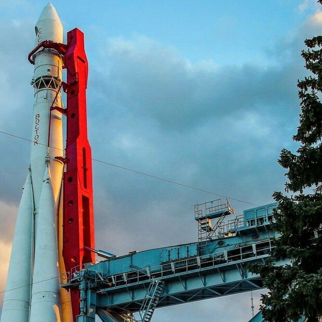
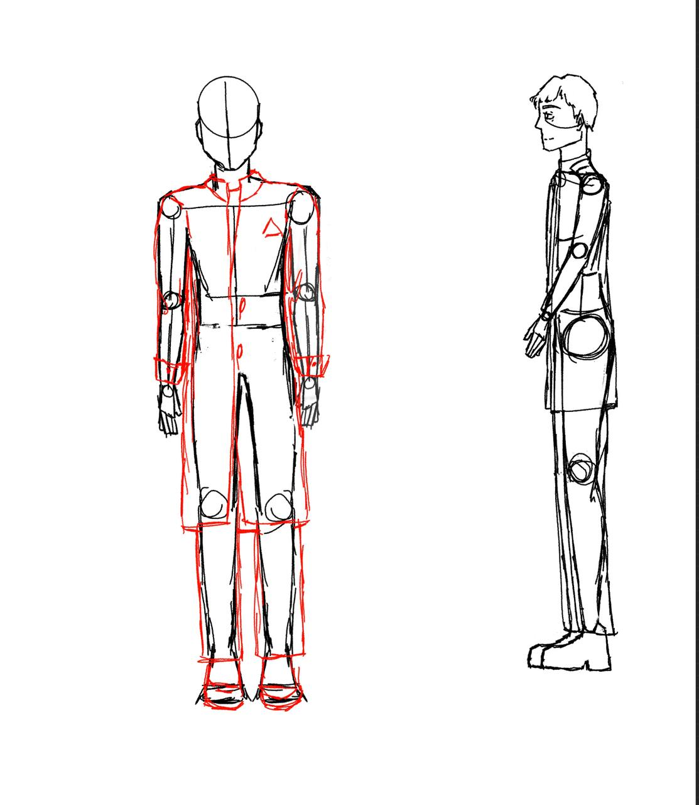
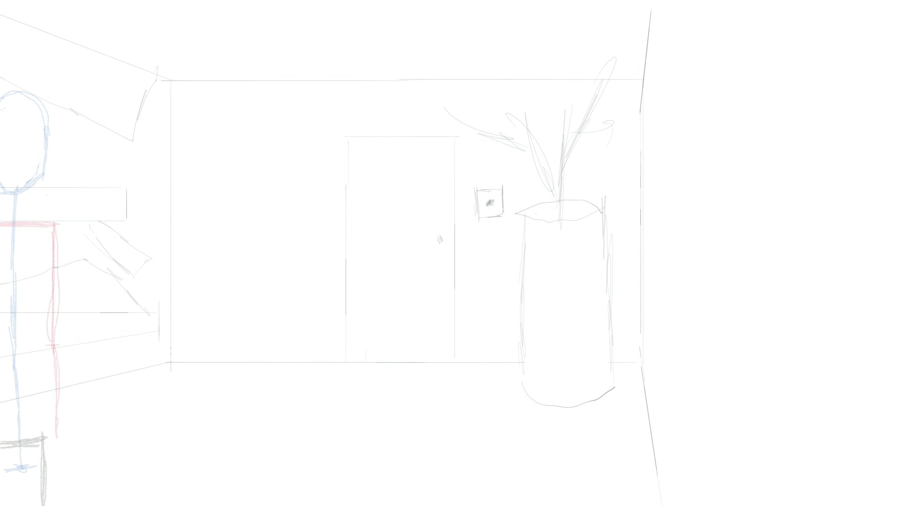
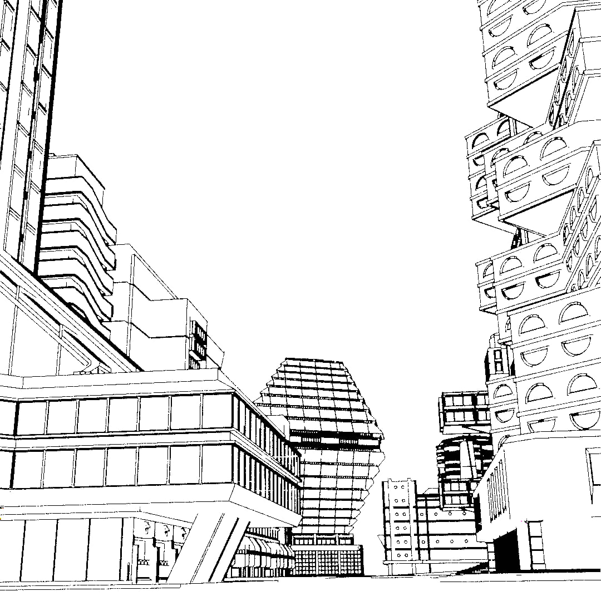
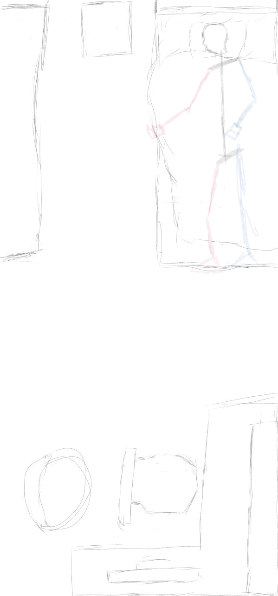
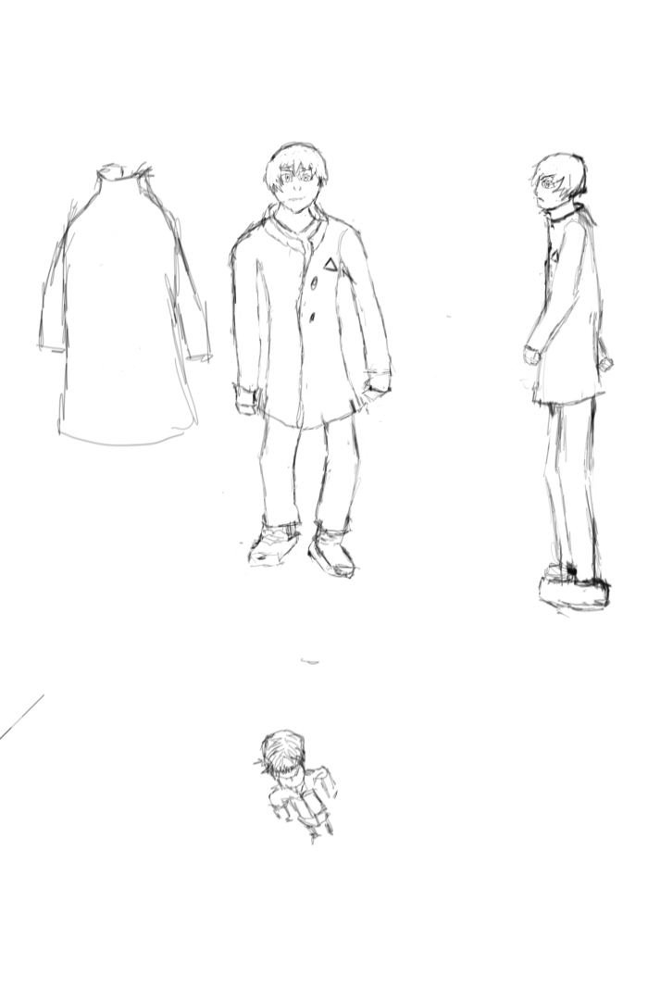
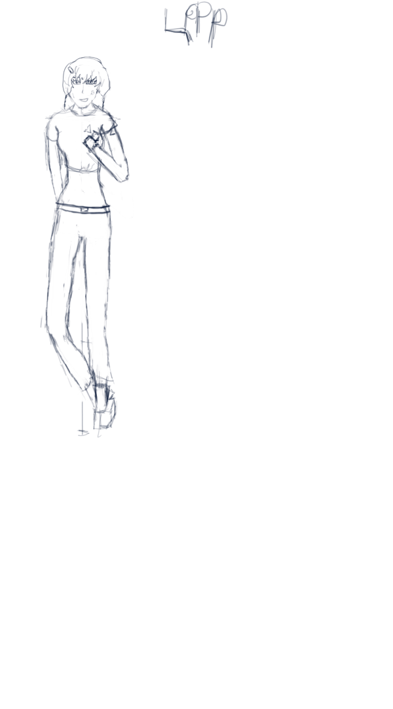
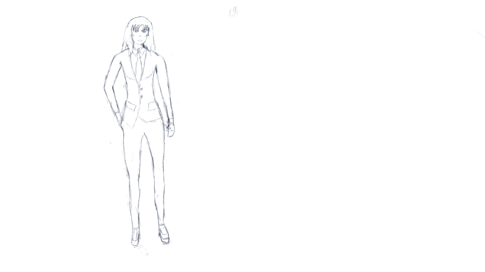

Журнал
Продолжение раскадровки, новый ТГ канал


Телеграмм канал
Были измененны некоторые дизаины персонажей, первые раскадровки.


Продолжение раскадровки
Начата работа над раскадровкой, была использованна новая технология для создания сложных локаций

Технология подрузумевает создание сложных локаций, с помощью 3д модельрования и рендеринга так называемых "border-render", после раскаришивание готовых каркасов локаций в стиле 2д вручную.

Начальная раскадровка
Начата работа над созданием дизаина локаций и персонажей.10.02.2025
-

Иван "Ваня" Грибоедов - главный герой.
-

Светлана - лучшая подруга Ваня.
-

Мама Вани.